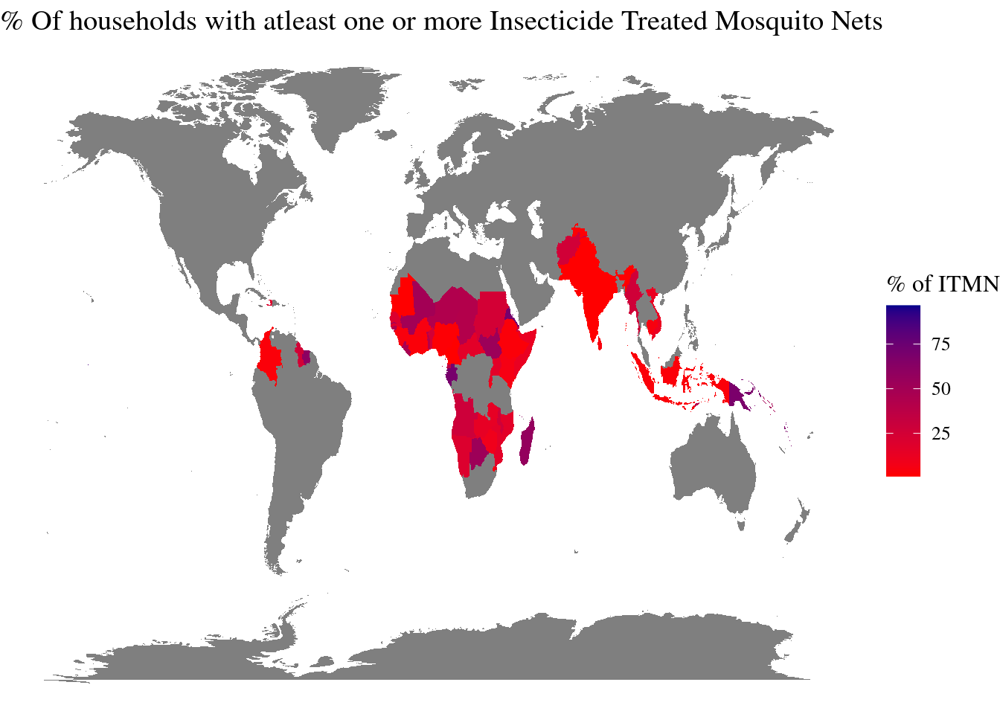

#World map
map_world <- map_data("world")
map_data_join <- full_join(unicef_indicator_2, map_world, by = c("country" = "region"))Warning in full_join(unicef_indicator_2, map_world, by = c(country = "region")): Detected an unexpected many-to-many relationship between `x` and `y`.
ℹ Row 1 of `x` matches multiple rows in `y`.
ℹ Row 421 of `y` matches multiple rows in `x`.
ℹ If a many-to-many relationship is expected, set `relationship =
"many-to-many"` to silence this warning.ggplot(map_data_join) +
aes(x = long, y = lat, group = group, fill = obs_value) +
geom_polygon() +
scale_fill_gradient(low = "red" , high = "darkblue", name = "% of ITMN") +
labs(fill = "obs_value") +
labs(x = "latitude",
y = "longitude",
title = "% Of households with atleast one or more Insecticide Treated Mosquito Nets") +
theme_void() +
theme(text = element_text(family = "serif", size = 12))